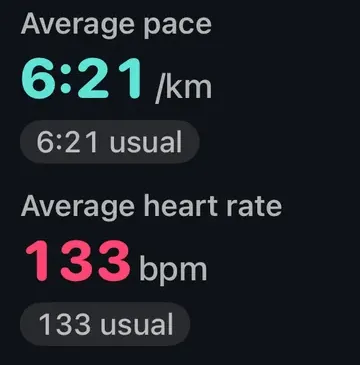

Ratgeber
Deine Zone 2 ist der lockere Bereich direkt unter deiner ersten Schwelle: dort, wo deine Atmung tiefer wird und das Sprechen schwerer fällt. Auf diese Definition hat sich 2025 ein Gremium aus 14 Sportwissenschaftlern und Trainern geeinigt (Sitko und Kollegen). Keine Formel trifft sie genau. Ein guter Startwert sind 60 bis 70 Prozent deiner Herzfrequenzreserve, geprüft mit dem Sprechtest und dann daran angepasst, wie sich die Läufe tatsächlich anfühlen.
Warum Zone 2 wirkt, steht in Was ist Zone-2-Training?, wie Zonen eingeteilt werden, in Was sind Herzfrequenzzonen? (beide auf Englisch). Dieser Ratgeber ist der praktische Teil.
Je nach Methode kann derselbe Läufer Bereiche bekommen, die 15 bis 20 Schläge auseinanderliegen. Deshalb widersprechen sich die Zone-2-Werte im Netz.
Ein Läufer, drei Formeln, drei Zonen 2
Die praktische Antwort: Nimm den Bereich aus der Herzfrequenzreserve als Startwert, lauf ein paar lockere Einheiten und senke die Obergrenze, wenn du dort kein Gespräch mehr führen könntest.
Beide Formelmethoden hängen am Maximum. Das bekannte 220 minus Alter wurde nie aus einer richtigen Studie abgeleitet (Robergs und Landwehr, 2002). Tanaka und Kollegen (2001) schlugen aus 351 Studien mit 18.712 Personen stattdessen 208 minus 0,7 × Alter vor. Beide stimmen um 40 Jahre überein und laufen dann auseinander: mit 60 sind es 160 gegenüber 166. So oder so liegt ein echtes Maximum oft 10 Schläge oder mehr neben der Formel, und ein um 10 Schläge falsches Maximum verschiebt die Obergrenze einer reservebasierten Zone 2 um etwa 7 Schläge.
Der höchste Puls, den du am Ende eines harten Rennens oder Anstiegs tatsächlich gemessen hast, ist meist besser als jede Formel. Wenn du gerade erst mit Sport beginnst oder eine Herzerkrankung hast, sprich vor jedem Maximaltest mit deiner Ärztin oder deinem Arzt.
Laut Apples Benutzerhandbuch werden die Herzfrequenzbereiche der Apple Watch als Prozentwert deiner maximalen Herzfrequenz dargestellt, automatisch anhand deiner Gesundheitsdaten berechnet und personalisiert, und nur, wenn dein Geburtsdatum in der Health-App auf dem iPhone eingetragen ist. Die genaue Formel veröffentlicht Apple nicht.
Fast jeder, der nach Puls zu laufen beginnt, findet Zone 2 langsamer als sein gewohntes lockeres Tempo. Bei neueren Läufern kann die erste Schwelle bei einem gemütlichen Trab liegen, sodass du an Anstiegen vielleicht gehen musst, um darunter zu bleiben. Das ist normal. Lauf nach Puls und Atmung, lass das Tempo sein, was es ist, und schau in sechs bis acht Wochen wieder hin: Bei gleichem Puls wird das lockere Tempo meist allmählich schneller, während deine aerobe Basis wächst.
Lauf nach Puls und Atmung, und lass das Tempo sein, was es ist.
Bei einem langen, gleichmäßigen Lauf steigt der Puls immer weiter, während das Herz pro Schlag weniger Blut auswirft. Das ist der kardiovaskuläre Drift, und Hitze und Flüssigkeitsverlust verstärken ihn (Coyle und González-Alonso, 2001). An einem warmen Tag kannst du bei einem Tempo aus Zone 2 driften, das vor einer Woche noch locker war. Mehr dazu in warum Hitze den Puls erhöht (auf Englisch).
Anstiege tun dasselbe in Sekunden. Entweder wirst du langsamer oder gehst, um unter der Obergrenze zu bleiben, oder du akzeptierst gegen Ende etwas Drift und hältst das Tempo gesprächig. Wie stark der Puls im Verhältnis zum Tempo über einen Lauf steigt, ist selbst ein nützlicher Wert; siehe Was ist Durability? (auf Englisch).
Seiler und Kjerland (2006) fanden bei gut trainierten Junioren im Skilanglauf, dass etwa 75 Prozent ihrer Ausdauereinheiten unter der ersten Schwelle lagen. Seilers Übersichtsarbeit von 2010 beschrieb dasselbe überwiegend lockere Muster über Ausdauersportarten hinweg, rund 80 Prozent locker: der Ursprung von „80/20“.
Das ist ein bei trainierten Athleten beobachtetes Muster, keine Quote. Eine Metaanalyse von 2024 fand für polarisiertes Training einen kleinen Vorteil bei der VO2max, vor allem bei hochtrainierten Athleten, sonst ähnliche Ergebnisse wie bei anderen Verteilungen (Silva Oliveira und Kollegen). Eine Übersicht von 2025 kam zu dem Schluss, dass Zone 2 für die Fitness nicht einzigartig besser ist als härtere Arbeit, besonders bei wenig Trainingszeit (Storoschuk und Kollegen). Ein vernünftiger Standard: die meisten Minuten locker, etwas härtere Arbeit, wenn du so weit bist. Siehe Was ist der Intensitätsmix? (auf Englisch).

Tempo neben PulsNach einem Lauf stellt Aera dein Durchschnittstempo und deinen Durchschnittspuls über dein Übliches aus gleichartigen Trainings der letzten 30 Tage, sobald es drei zum Vergleichen gibt. Gleicher Puls bei schnellerem Tempo, Woche für Woche: So wächst deine aerobe Basis.
Aera, für iPhone und Apple Watch
Aera zeichnet fünf Herzfrequenzbereiche aus deinen eigenen Werten und zeigt, wo die Minuten jedes Trainings gelandet sind. Standardmäßig rechnet Aera mit der Herzfrequenzreserve: Zone 2 umfasst 60 bis 70 Prozent des Spielraums zwischen deinem Ruhe- und deinem Maximalpuls. Das Maximum ist der höchste plausible Schlag aus deinen Trainings der letzten 12 Monate, angezeigt mit Gerät und Tag. Der Ruhepuls ist der Mittelwert (Median) aus bis zu 45 Tagen Ruhepuls in Apple Health. Solange beides fehlt, steht auf dem Bereichsbildschirm Geschätzt, statt die Bereiche deine zu nennen.
Unter Einstellungen > Trainings > Herzfrequenzbereiche kannst du auf Prozent vom Max., Laktatschwelle (aus deinem eigenen 30-Minuten-Test) oder Eigene, also fünf selbst gesetzte Grenzen, wechseln und deinen eigenen Maximal- und Ruhepuls eintragen. Apple Health gibt die eigene Bereichstabelle der Fitness-App nicht weiter, Aera kann die auf der Uhr gesetzten Bereiche also nicht lesen; du kannst dieselben Grenzen eintragen.
Nach einem Training zeigt Wo dein Herz gearbeitet hat die Zeit in jedem Bereich, nach Zeit gezählt und ohne Pausen. Draußen vermerkt eine kurze Zeile unter den Bereichsbalken, wenn es wärmer oder kühler war, als du sonst trainierst, und längere Läufe zeigen den Herzdrift zwischen beiden Hälften, unter 5 Prozent als gleichmäßig markiert. Intensitätszonen auf dem Fitness-Tab teilt jede Woche in locker, mittel und hart und vergleicht sie mit deinen eigenen üblichen Wochen, ohne 80/20-Ziellinie. All das ist kostenlos. Es gibt kein Konto, und deine Gesundheitswerte werden auf deinem iPhone berechnet.
Aera ist kein Medizinprodukt.
Zone 2 ist der lockere Bereich direkt unter deiner ersten Schwelle, wo deine Atmung tiefer wird. Eine praktische Schätzung sind 60 bis 70 Prozent deiner Herzfrequenzreserve: Maximalpuls minus Ruhepuls, mal 0,6 und 0,7, dann den Ruhepuls wieder dazurechnen. Bei einem Maximum von 180 und einem Ruhepuls von 55 sind das etwa 130 bis 143 Schläge pro Minute. Prüfe es mit dem Sprechtest: Ganze Sätze sollten noch gehen.
Starte in der Training-App ein Training „Laufen im Freien“ und dreh die Digital Crown zur Ansicht „Herzfrequenzbereiche“. Sie zeigt deinen aktuellen Bereich, deinen Puls und die Zeit in diesem Bereich. Apple berechnet die Bereiche aus deinen Gesundheitsdaten und braucht dafür dein Geburtsdatum in der Health-App. Für deinen eigenen Bereich wähle „Manuell“ unter Einstellungen > Training > Herzfrequenzbereiche.
Bei vielen Läufern, besonders bei neueren, liegt die erste Schwelle bei einem gemütlichen Trab, sodass Zone 2 halten an Anstiegen Gehen bedeuten kann. Außerdem steigt der Puls bei einem langen oder warmen Lauf auch bei gleichem Tempo. Lauf nach Puls und Atmung statt nach Tempo; das lockere Tempo wird meist über Wochen bis Monate schneller.
Ausdauerathleten absolvieren typischerweise etwa drei Viertel bis vier Fünftel ihrer Einheiten locker, unter der ersten Schwelle. Das ist ein beobachtetes Muster, keine Regel. Wenn du wenig Zeit zum Trainieren hast, zählen härtere Einheiten auch, daher ist ein vernünftiger Standard: die meisten Minuten locker, dazu etwas härtere Arbeit.
Verwandte Notizen (auf Englisch): was Zone-2-Training ist · was Herzfrequenzzonen sind · warum Hitze den Puls erhöht · was Durability ist · was der Intensitätsmix ist
Verwandter Ratgeber: Laufen nach schlechtem Schlaf?